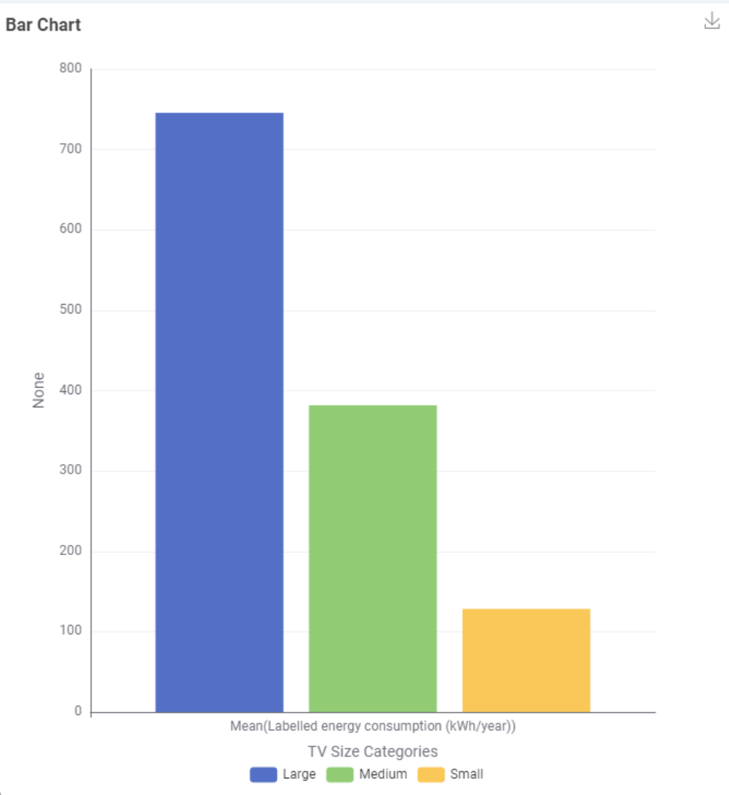

Energy Consumption Impact of Television Size
Issue
The increase of Television screen sizes are impacting the energy consumption rate each year. As televisions become larger, they may require significantly more energy to operate, which can increase household electricity usage and costs.
Demonstration

The graph above illustrates the relationship between television screen size and energy consumption. As screen size increases, so does the power required to operate the device. The results show a very clear difference. Large TVs have the highest average energy consumption, at approximately 745 kWh per year. Medium TVs consume around 382 kWh per year, while small TVs consume only around 126 kWh per year.
Ideas for Overcoming the Issue
Based on this finding, one possible solution is to encourage consumers to consider energy consumption when choosing a television, rather than looking only at screen size.
- Alternatively:
- Showing energy consumption clearly when customers are choosing TVs
- An energy-awareness campaign
- Encouraging consumers to consider smaller or more energy-efficient TVs
- A pilot program that educates consumers about TV energy consumption
Solution: Energy Awareness Labels
A clear energy-consumption label when people are buying a TV. A simple solution is to provide consumers with a clear energy-consumption label when they are choosing a TV.
Recommendations
Our data shows a substantial difference in average energy consumption between TV size categories, with large TVs consuming considerably more energy than medium and small TVs. Therefore, we recommend expanding the energy-awareness pilot if the before-and-after evaluation demonstrates that it successfully improves consumer awareness and encourages more energy-conscious choices.
Conclusion, the goal is not to tell consumers that they cannot buy large TVs, but to help them make more informed decisions by understanding the energy consequences of their choices.